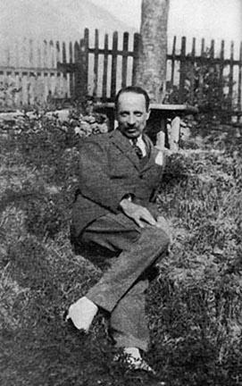
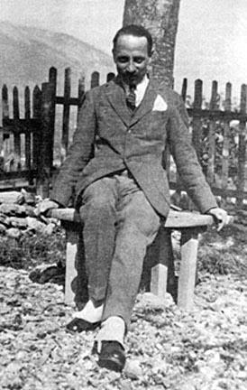

Rilke na starej fotografii
Muzot 1925
Rilke w ogrodzie swej szwajcarskiej samotni Muzot. Rok 1925. Dwa treliaże porośnięte kwitnącymi różami dodawały temu miejscu uroku.
Wiele lat wcześniej, podziwiając w Ogrodzie Luksemburskim klomb róż „La France”, poeta tęsknił za dniem, w którym sam będzie posiadał własną rabatę, „by przed nią usiąść, gdy już będę stary, i przemienić ją w słowa, w których tkwi wszystko to, co wówczas poznam”.
Po raz pierwszy od czasu Westerwede, gdzie Rilke zamieszkał ponad dwadzieścia lat wcześniej, towarzyszyło mu uczucie, iż posiada własne cztery ściany oraz może kształtować ogród wedle swego upodobania.